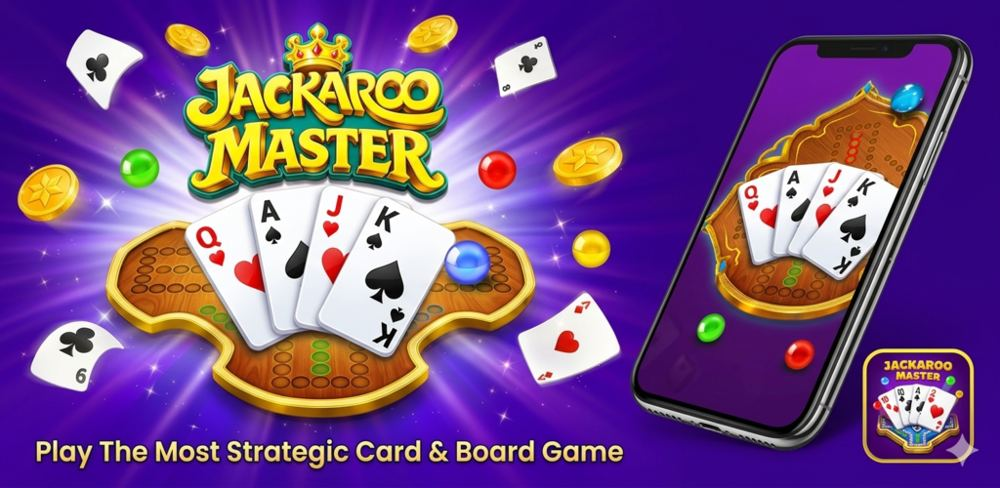

MULTIPLAYER / MOBILE↗Jackaroo Master
01Rebuilt in Unity. Connected in real time. Ported the Cocos/TypeScript game with gameplay parity and a custom WebSocket network manager.
UnityC#WebSockets
I’m Suleman. I turn complex systems into
games that feel effortless to play.
The engineering behind them is anything but. I build the systems that turn an idea into an experience worth playing.
Live games, real-time multiplayer, and the systems that make them work.

MULTIPLAYER / MOBILE↗Rebuilt in Unity. Connected in real time. Ported the Cocos/TypeScript game with gameplay parity and a custom WebSocket network manager.
Expanded the park. Opened it to more players. Ported to CrazyGames, GameDistribution, Playgama, and Yandex Games.
Built a custom localization system from scratch, without Unity Localization, to meet project requirements. Added two rides, reusable skins, progression integrations, and Android releases with ads and attribution.
From objectives to meaningful progression. Implemented NPC-driven tasks with quest dependencies, objective tracking, quest switching, and reward collection.
Reworked first-time user experience (FTUE) with directional guidance, combat and upgrade tutorials, and progression unlocks. Updated rocket quests, UI feedback, respawn behavior, and ascension tasks; delivered the Poki WebGL build.
A smoother game, frame by frame. Optimized rendering, textures, and code; resolved multiplayer synchronization issues and migrated to URP.
Live-game updates, SDK maintenance, and Android / iOS releases.
Unity · Mobile↗JSON-driven missions, cloud saves, inventory, and wallet authentication.
PlayFab · TonConnectFour-language localization, runtime assets, editor tools, and mini-games.
AWS S3 · URPTouch-based physics, ball merging, obstacles, and finish-line progression.
Unity · C#↗I’m Suleman, a Unity game developer based in Lahore. I build, port, and improve games across mobile, PC, and WebGL.
I enjoy the work behind the experience: making multiplayer stay in sync, turning a prototype into maintainable systems, and finding the bottleneck between a good game and a smooth one.
AWAY FROM THE EDITORTable tennis, cricket, anime, teaching, coding challenges—and, of course, video games.
Multiplayer architecture, NPC-driven quests, FTUE, custom localization, SDK integrations, and mobile / WebGL releases.
Performance optimization, backend-connected features, mini-games, and Unity Netcode.
Three hyper-casual prototypes, competitive AI, and a custom third-person controller.
Bachelor of Software Engineering
PUCIT / FCIT · Lahore, Pakistan
From gameplay logic to the last mile of a production release.
Unity, C#, C++, gameplay systems, NPC quests, FTUE, UI, custom localization, mini-games
WebSockets, Unity Netcode, PlayFab, AWS S3, JSON-based data systems
Firebase, Google AdMob, AppLovin MAX, Adjust, GameAnalytics
Git, GitHub, GitLab, Jira, Asana, Android, iOS, Steam, WebGL, CrazyGames, Poki, GameDistribution, Playgama, Yandex Games